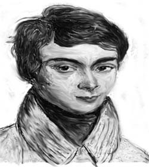

数学家的荣誉与理想--费尔斯奖
一、 费尔斯奖简介
图：费尔斯（John Charles Fields），加拿大数学家公元1863~1932年。
诺贝尔奖里面没有数学奖，所以费尔斯奖被称为数学界的诺贝尔奖，它可说是国际数学界的最高荣誉奖。费尔斯奖系由加拿大数学家费尔斯（John Charles Fields）（图1）的遗产和1924年的多伦多「国际数学大会」剩余费用创设的。它每四年在每届的「国际数学大会」中颁奖，每次获奖人数2〜4名。由于过去获奖的数学才子都是40岁以下的青年才俊，因此有人说费尔斯奖有个不成
图：阿贝尔（N.H. Abel，挪威人），26岁死于肺结核，重要贡献有阿贝尔积分、椭圆函数、无穷级数的收敛性！证明四次代数方程式一般不能用根式求得，引初阿贝尔群。

图：伽罗瓦（E. Galois，法国人），1832年死于一场不明原因的决斗（政敌？情敌？）他引入置换群，彻底解决代数方程的根式可解条件，并开创群论。
图2：数学界的两颗闪亮流星：阿贝尔与伽罗瓦。
文规定，就是奖励年轻人，限制获奖者的年龄不得超过40岁。但有人不认为是如此，因为本来数学界的天才皆来自年轻人，例如：阿贝尔（N.H. Abel）、伽罗瓦（E. Galois），如图2，在年纪轻轻就展露头角，年轻人得奖的机会自然比其他年龄层的人高些。第一次费尔斯奖颁发时间是1936年的挪威「奥斯陆国际数学大会」。
二、 诺贝尔奖里面没有数学奖
诺贝尔奖（Afred Nobel Prize）（图3）是世界上一项至高的荣誉。获奖者不论国籍，只要对人类有伟大贡献都有得奖机会。它每年12月10日下午4时30分在瑞典首都「斯德哥尔摩」的音乐厅举行颁奖典礼。瑞典国王会亲临致词。
诺贝尔奖于1901年第一次颁奖，起初只设物理、化学、医学、和平等五项，1968年起又增加「经济奖」，但诺贝尔奖死始终没有包括数学奖，很多数学家感到非常遗憾。关于诺贝尔奖没有包括数学的理由，有许多传说，有人说：「诺贝尔和当时瑞典著名的数学家米塔.列夫勒（G.M. Mittag Leffler）（图4）交情恶劣。」也有人说：「诺贝尔不了解数学的价值。」……等等。但无论如何，诺贝尔奖没有包括数学是不争的事实。
图3：诺贝尔（A. Nobel,瑞典人，公元1833~1896）发明黄色炸药，诺贝尔奖的创始人，周期表第102元素「诺」的纪念人。
图4：米塔.列夫勒（G.M. Mittag Leffler，瑞典人，公元1846~1927），数学家主要贡献是解析函数论，卓越的数字教育家
三、 国际数学家大会
每四年由全世界的数学家定期集会并发表最新研究成果的国际数学家大会（ICM, International Congress of Mathematicians），它的历史很久，第一届是在1897年于瑞士的苏黎世举行，当届约有200余人参加。以后，除二次的世界大战期间停办外，一般是每四年召开一次。
ICM最著名的一次会议是1900年在巴黎举行的第二届会议。那次会议中，德国著名数学家希尔伯特（David Hilbert）（图5）根据19世纪数学未解决问题和未来的发展趋势，提出23个数学的问题。这23个数学的问题涉及当时大部份的数学领域和未来数学的可能趋势。它推动了20世纪数学的发展，也给20世纪数学家一个努力方向。这23个数学的问题在数学史上称为希尔伯特数学问题（Hilbert’s Mathematical Problems）
图5：希尔伯特（德国人，公元1862~1943），提出23个数学的问题，给20世纪数学家一个努力方向。他研究几何学，建立希尔伯特空间理论，晚年致力数学基础，建立数学形式主义。
四、 费尔斯的生平与贡献
费尔斯（John Charles Fields）于1863年5月14日生于加拿大安大略省（Ontario）的哈密尔顿（Hamilton），1932年死于该省的多伦多市（Toronto）。
费尔斯于1880年就学多伦多大学，1887年获得美国约翰霍普金斯（Johns Hopkins）大学的博士学位，1889年在美国的阿勒格尼（Allegheny）大学教书3年，后于1892年到巴黎、柏林游学。1902年回加拿大任教多伦多大学。1907年当选为加拿大皇家学会会员，并兼任伦敦皇家学会会员。主要成就是数学事业的组织管理，也是第一个在加拿大推行研究生教育的人。
1924年，在费尔斯的热心筹备和主持下，第7届国际数学大会在加拿大多伦多顺利举行。在这次大会中，费尔斯正式倡议将这次大会的剩余款，设置一个数学奖。后来费尔斯因积劳成疾而去世，他将自己的一大笔遗产和1924年国际数学大会的结余经费，拖人转交将在瑞士苏黎世召开的第9届国际数学大会。
费尔斯生前曾经表示，数学奖不要以个人或者机构来命名，而要用国际奖金的名义。然而瑞士苏黎世的第9届国际数学大会经过慎重讨论后，为了纪念费尔斯为国际数学事业的贡献，决定命名为费尔斯奖。得讲的人可获得一枚黄金打造的奖牌（图6）和奖金。它每四年在「国际数学大会」中颁奖，每次获奖人数2〜4名。
奖章背面刻有拉丁文「CONGREGATI EX TOTO ORBE MATHEMATICI OB SCRIPTA INSIGNIA TRIBUERE」，意为「聚集自全球的数学家，为了杰出著作颁发（奖项）」。背景最上层为橄榄树枝代表桂冠，树枝后面为阿基米得的球体内切于圆柱体（这是阿基米得最得意的作品，此作品也刻在阿基米得的坟墓上）。
费尔斯奖素有数学上诺贝尔奖的美誉，颁奖的对象虽然是针对数学上有成就的人，但是从1936年第十届挪威奥斯陆国际数学大会第一次颁奖以来，尚未有超过40岁以上的人士获奖。获奖者一般是当届数学大会的前几年有重大特殊成就的数学家。对数学家来讲，费尔斯奖无疑是国际上最高荣誉的象征，也给数学家一个奋斗的梦。
图6：费尔斯奖的奖牌，直径62mm，厚度3mm，正面的人像是阿基米得，外围的字是获奖人的姓名和颁奖年、月、日